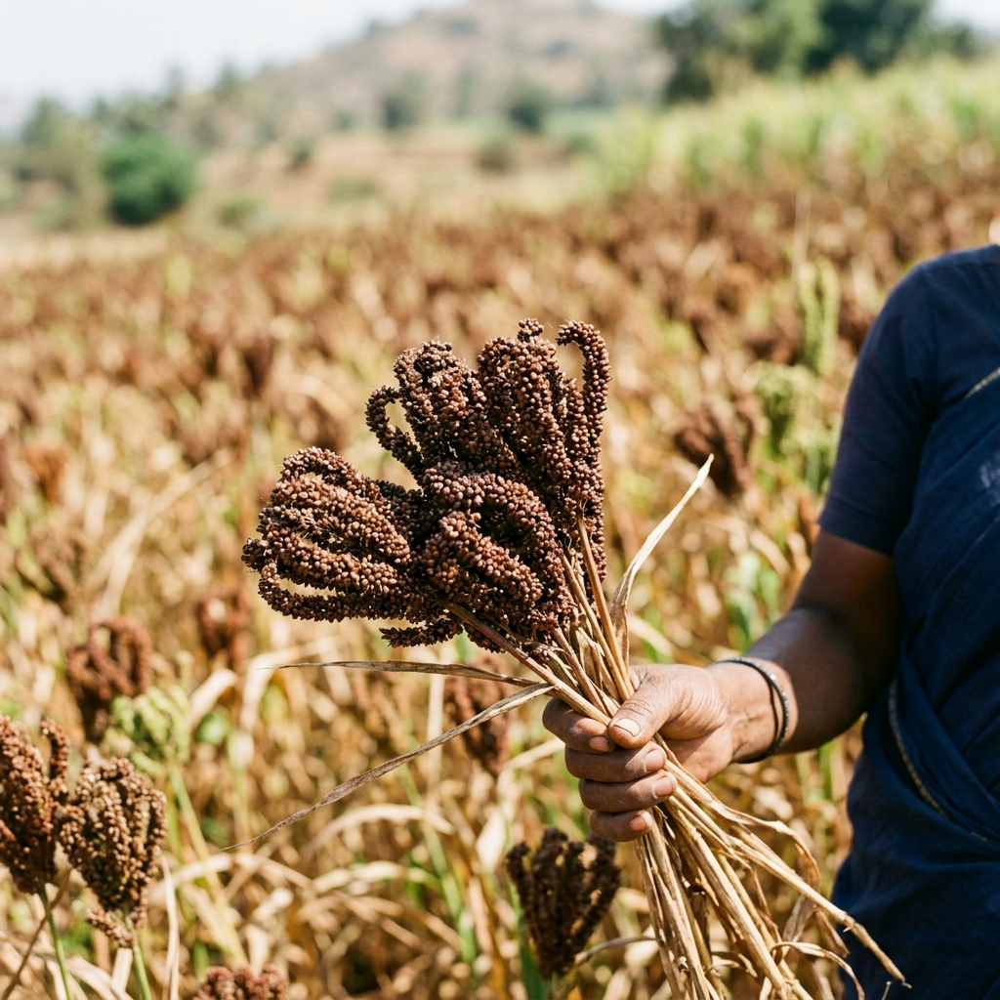
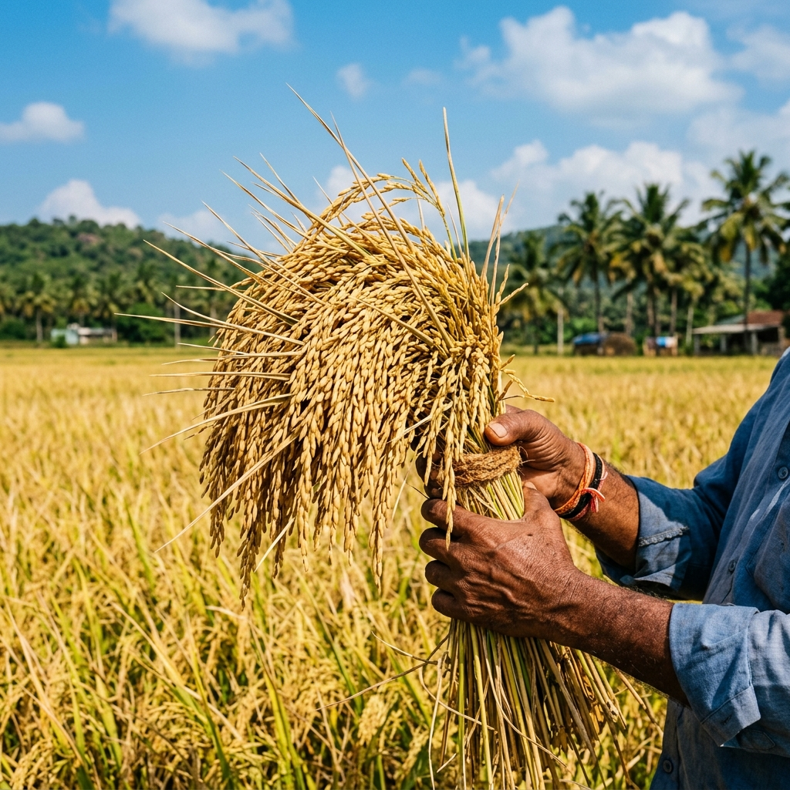
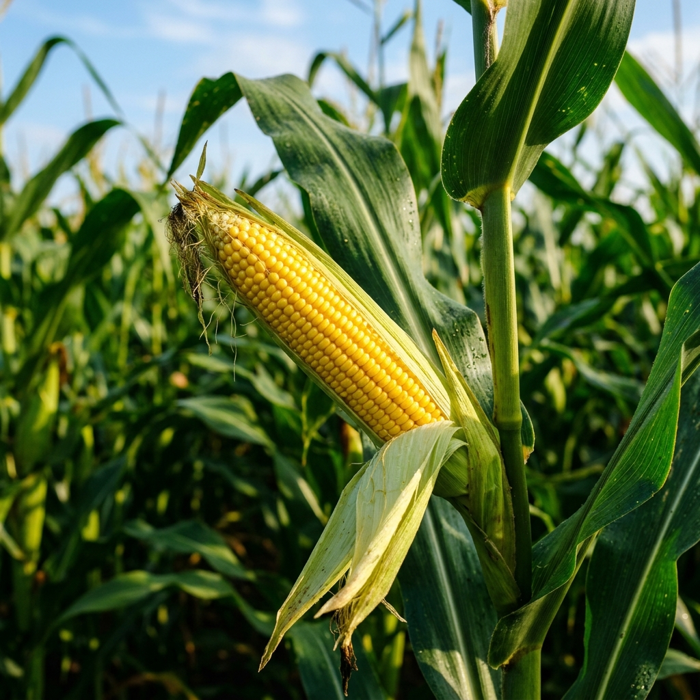
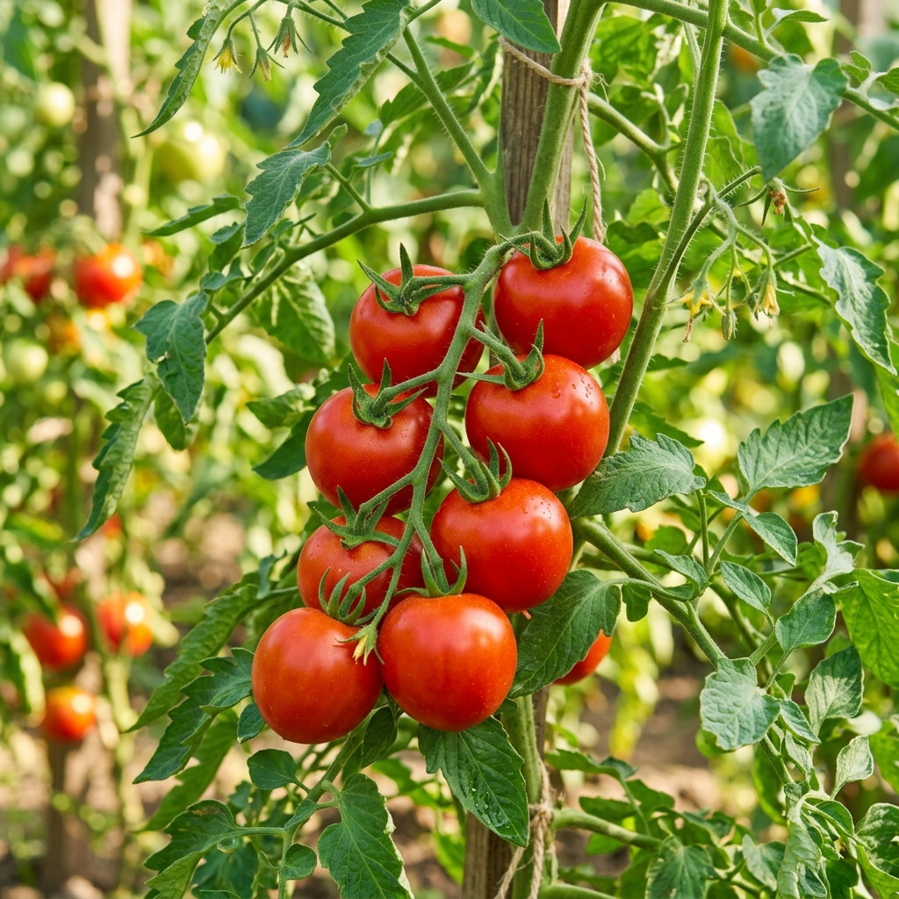
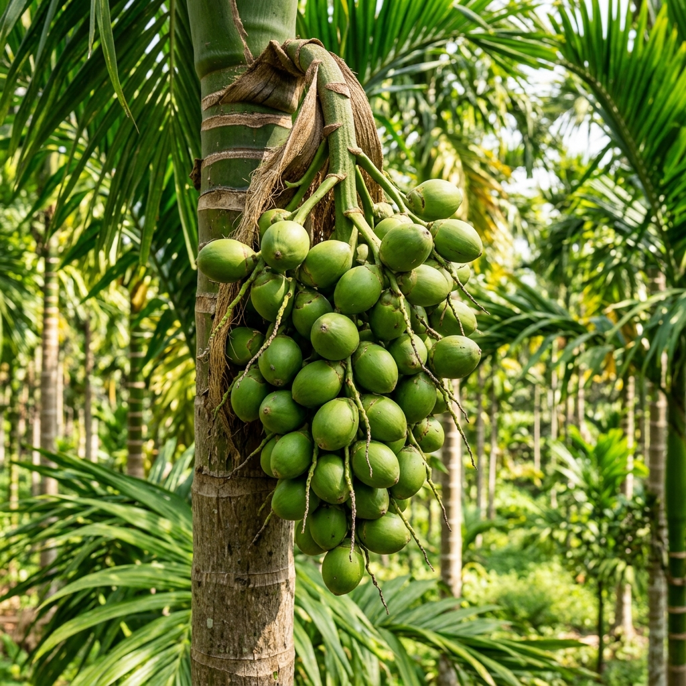
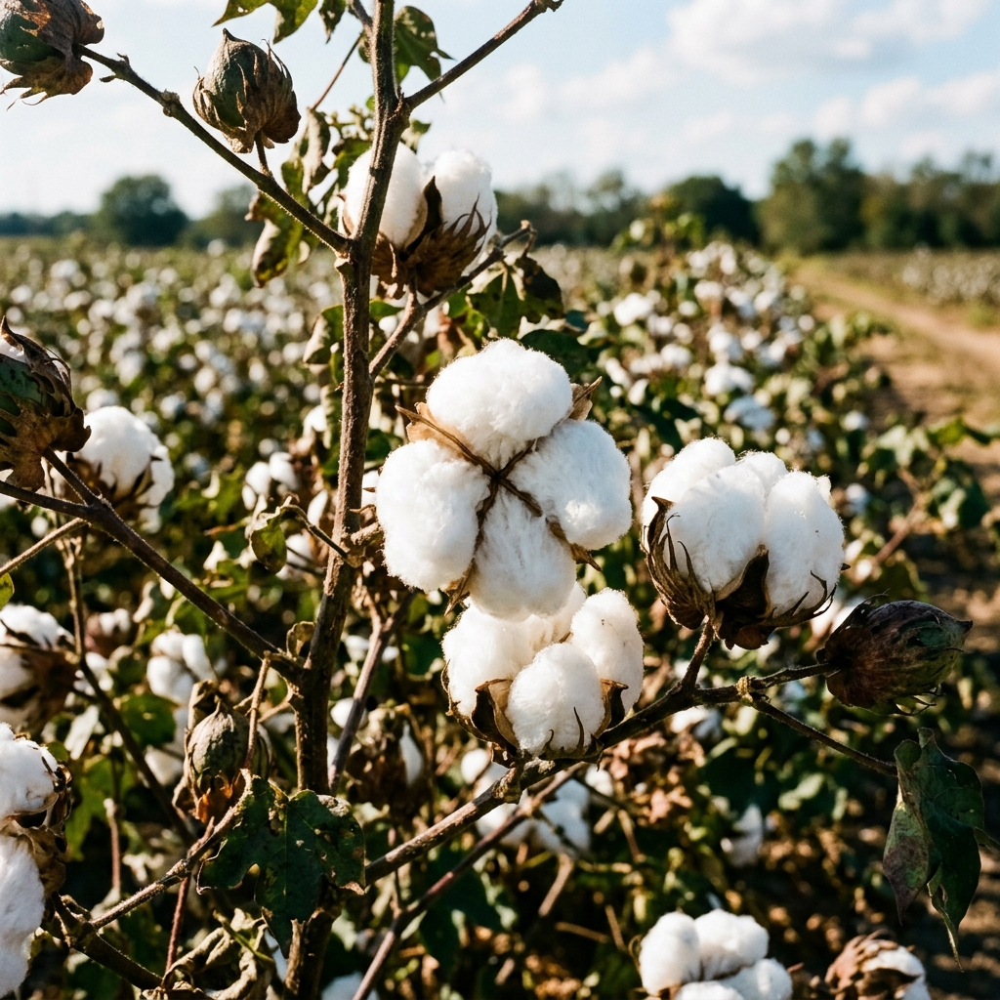
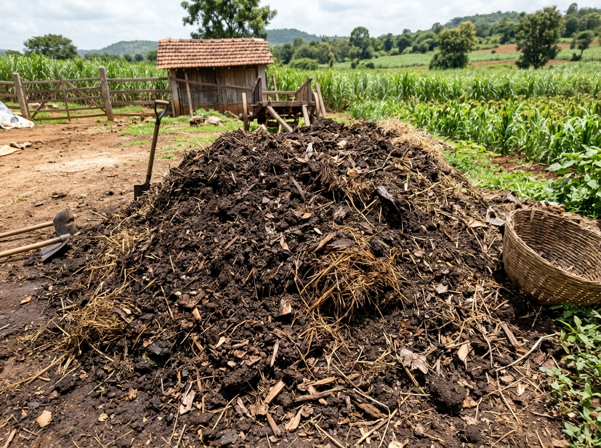
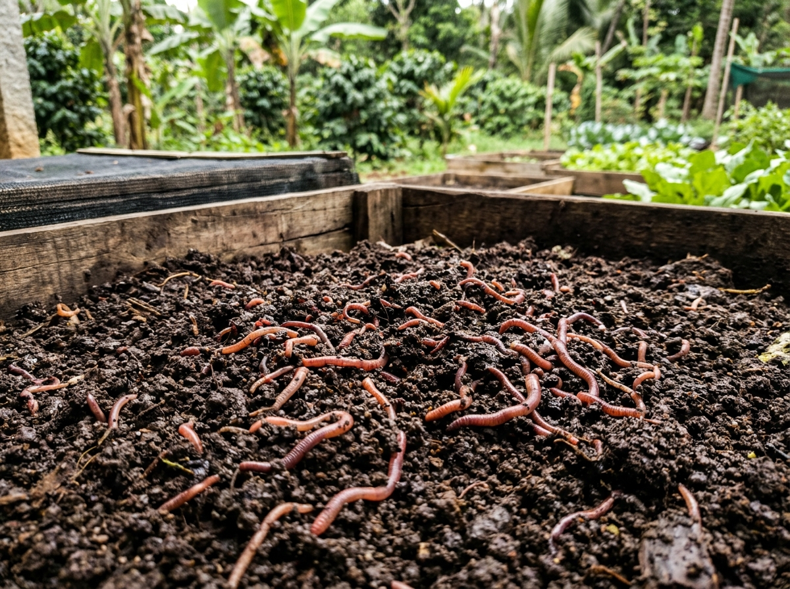
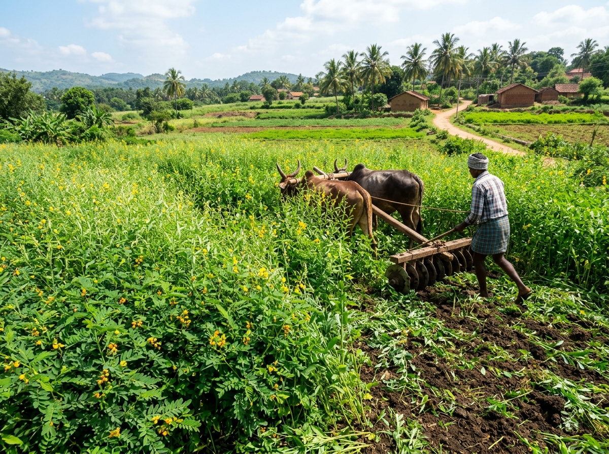

Rain is expected soon.
Avoid spraying pesticides before rain.
ಶೀಘ್ರದಲ್ಲೇ ಮಳೆ ನಿರೀಕ್ಷಿಸಲಾಗಿದೆ.
ಮಳೆ ಬರಲು ಮುನ್ನ ಕೀಟನಾಶಕ ಸಿಂಪಡಣೆಯಿಂದ ದೂರವಿರಿ.
ನಿಮ್ಮ ಮಣ್ಣು ಮತ್ತು ಹವಾಮಾನಕ್ಕೆ ಸೂಕ್ತ ಬೆಳೆ ತಿಳಿಯಿರಿ
ಬೆಳೆಯ ಹಂತಗಳು ಮತ್ತು ಇಂದಿನ ಕೃಷಿ ಕೆಲಸಗಳನ್ನು ಗಮನಿಸಿ
ಎಲೆ ಫೋಟೋ ಅಪ್ಲೋಡ್ ಮಾಡಿ ಸಸ್ಯದ ಆರೋಗ್ಯ ಪರೀಕ್ಷಿಸಿ
ಸಾವಯವ ಮತ್ತು ರಾಸಾಯನಿಕ ಪೋಷಕಾಂಶಗಳ ಸಮತೋಲಿತ ಮಾರ್ಗದರ್ಶಿ
ಬೆಳೆಯ ಜೀವನ ಚಕ್ರ ಮತ್ತು ಶಿಫಾರಸು ವೀಕ್ಷಿಸಲು ಆಯ್ಕೆ ಮಾಡಿ






ಕಳೆ ತೆಗೆಯಿರಿ ಮತ್ತು ಮಣ್ಣಿನಲ್ಲಿ ತೇವಾಂಶ ಕಾಪಾಡಿಕೊಳ್ಳಿ. ಲಘು ನೀರಾವರಿ ನಂತರ ಸಾರಜನಕ ಗೊಬ್ಬರ ನೀಡಿ.
ಕೆಳಗಿನ ನೈಜ ಛಾಯಾಚಿತ್ರಗಳನ್ನು ನೋಡಿ, ನಿಮ್ಮ ಜಮೀನಿನ ಮಣ್ಣಿನ ಮೇಲೆ ಕ್ಲಿಕ್ ಮಾಡಿ.
ನಿಮ್ಮ ಕರ್ನಾಟಕದ ಜಿಲ್ಲೆಯನ್ನು ಆರಿಸಿ. ನೈಜ ಹವಾಮಾನ ಮತ್ತು ಮಳೆಯ ವಿವರಗಳು ಸ್ವಯಂಚಾಲಿತವಾಗಿ ಹೊಂದಿಸಲ್ಪಡುತ್ತವೆ.
ಕಾವೇರಿ ಕಣಿವೆ ಕೃಷಿ ವಲಯ — ರಾಗಿ, ಕಬ್ಬು, ಭತ್ತ, ಮೆಕ್ಕೆಜೋಳಕ್ಕೆ ಅತ್ಯಂತ ಪ್ರಶಸ್ತ.
ಪೂರ್ವನಿಯೋಜಿತ ಮೌಲ್ಯಗಳನ್ನು ಪರಿಶೀಲಿಸಿ ಅಥವಾ ನಿಮ್ಮ ಮಣ್ಣು ಪರೀಕ್ಷಾ ವರದಿಗೆ (Soil Health Card) ತಕ್ಕಂತೆ ಹೊಂದಿಸಿ.
ಒಮ್ಮೆ ನಮೂದಿಸಿದ ವಿವರಗಳನ್ನು ಉಳಿಸಲಾಗುತ್ತದೆ (ಮತ್ತೆ ನಮೂದಿಸುವ ಅಗತ್ಯವಿಲ್ಲ).
ನಿಮ್ಮ ಮಣ್ಣು, ಸ್ಥಳ ಮತ್ತು ಹವಾಮಾನ ಪರಿಸ್ಥಿತಿಗಳಿಗೆ ಅನುಗುಣವಾಗಿ ವಿಶ್ಲೇಷಿಸಲಾಗಿದೆ.
ಸಿಂಪರಣೆ ಮಾಡಬೇಡಿ ಅಥವಾ ಕಳೆ ತೆಗೆಯಿರಿ.
Avoid spraying pesticides before rain.
ಮಳೆ ಬರಲು ಮುನ್ನ ಕೀಟನಾಶಕ ಸಿಂಪಡಣೆಯಿಂದ ದೂರವಿರಿ.
ಪ್ರಮುಖ ಬೆಳೆಗಳ ಬೆಳವಣಿಗೆಯ ಹಂತಗಳು, ಅಂದಾಜು ಅವಧಿ ಮತ್ತು ಹಂತದ ವಿವರಣೆ
A primary staple cereal cultivated extensively across river basins and irrigated command areas in Karnataka.
ನೀವು ಈ ಹಿಂದೆ ಪಡೆದ ಬೆಳೆ ಶಿಫಾರಸುಗಳ ಇತಿಹಾಸ ಮತ್ತು ಮಣ್ಣಿನ ವಿವರಗಳನ್ನು ಇಲ್ಲಿ ಸುರಕ್ಷಿತವಾಗಿ ಉಳಿಸಿಕೊಳ್ಳಲಾಗುತ್ತದೆ.
ಕರ್ನಾಟಕದ ರೈತ ಬಾಂಧವರಿಗೆ ಅಧಿಕೃತ ಕೇಂದ್ರ & ರಾಜ್ಯ ಕೃಷಿ ಯೋಜನೆಗಳು, ಪಿಎಂಎಫ್ಬಿವೈ ಬೆಳೆ ವಿಮೆ, ಕಿಸಾನ್ ಕ್ರೆಡಿಟ್ ಕಾರ್ಡ್ ಮತ್ತು ನೇರ ಅರ್ಜಿ ಪೋರ್ಟಲ್ಗಳು.
ಅಪ್ಲಿಕೇಶನ್ ಆದ್ಯತೆಗಳು, ಭಾಷೆ ಮತ್ತು ಜಮೀನಿನ ಪ್ರೊಫೈಲ್ ನಿರ್ವಹಣೆ.
ಕನ್ನಡ ಮತ್ತು ಇಂಗ್ಲಿಷ್ ನಡುವೆ ಅಪ್ಲಿಕೇಶನ್ ಭಾಷೆಯನ್ನು ಬದಲಾಯಿಸಿ.
ಉಳಿಸಲಾದ ಮಣ್ಣು ಪರೀಕ್ಷಾ ವರದಿ (SHC), ನೀರಾವರಿ ಮಾಹಿತಿ ಮತ್ತು ಆದ್ಯತೆಯ ಮಾರುಕಟ್ಟೆ ವಿವರಗಳನ್ನು ತೆರವುಗೊಳಿಸಿ ಪ್ರಾದೇಶಿಕ ಮಾನದಂಡಗಳಿಗೆ ಮರುಹೊಂದಿಸಿ. ಅಳಿಸುವ ಮುನ್ನ ದೃಢೀಕರಣವನ್ನು ಕೇಳಲಾಗುತ್ತದೆ.
ಕರ್ನಾಟಕದ ರೈತ ಬಾಂಧವರಿಗೆ ಸರಳವಾಗಿ, ಡಿಜಿಟಲ್ ಜಟಿಲತೆಗಳಿಲ್ಲದೆ, ತಮ್ಮ ಮಣ್ಣಿನ ಪ್ರಕಾರ ಹಾಗೂ ಸ್ಥಳೀಯ ಹವಾಮಾನಕ್ಕೆ ಸೂಕ್ತವಾದ ಬೆಳೆಯನ್ನು ಶಿಫಾರಸು ಮಾಡುವುದು.
ಕರ್ನಾಟಕ ಕೃಷಿ ವಿವಿಗಳು (UAS Bengaluru / UAS Dharwad) ಹಾಗೂ ICAR ಶಿಫಾರಸು ಮಾಡಿದ ವೈಜ್ಞಾನಿಕ ಪೋಷಕಾಂಶ ವೇಳಾಪಟ್ಟಿ
ಸಾಲುಗಳಲ್ಲಿ ಬಿತ್ತನೆಗೆ ಮೊದಲು ಮಣ್ಣಿಗೆ ಬೆರೆಸಿ (50% N + 100% P & K ಒದಗಿಸುತ್ತದೆ).
ಮೊದಲ ಕಳೆ ತೆಗೆದ ನಂತರ, ಮಣ್ಣಿನಲ್ಲಿ ತೇವಾಂಶವಿದ್ದಾಗ ಸಾಲುಗಳ ಪಕ್ಕದಲ್ಲಿ ಹಾಕಿ ಮಣ್ಣು ಮುಚ್ಚಿ.
ಹಗುರ ನೀರಾವರಿ ಅಥವಾ ಮಳೆಯ ನಂತರ ನೀಡಿ (ಭಾರಿ ಮಳೆ ಬರುವ ಮುನ್ಸೂಚನೆ ಇದ್ದಾಗ ಬೇಡ).
| ಬೆಳವಣಿಗೆ ಹಂತ (Stage) | ಗೊಬ್ಬರದ ವಿಧ (Fertilizer) | ಪ್ರಮಾಣ / ಎಕರೆ (Dose/Acre) | ವಿಧಾನ & ಎಚ್ಚರಿಕೆ (Method) |
|---|---|---|---|
| 1. ಬಿತ್ತನೆ ಪೂರ್ವ / ಸಸಿ
ನಾಟಿ (Basal Dose) |
FYM + DAP + Urea + MOP | FYM 4 ಟನ್, DAP 44 kg, Urea 22 kg, MOP 33 kg | ಸಾಲುಗಳಲ್ಲಿ ಬಿತ್ತನೆಗೆ ಮೊದಲು ಮಣ್ಣಿಗೆ ಬೆರೆಸಿ (50% N + 100% P & K) |
| 2. ಕವಲೊಡೆಯುವ ಹಂತ (25-30 ದಿನಗಳು) |
ಯೂರಿಯಾ ಮೇಲುಗೊಬ್ಬರ | 22 kg ಯೂರಿಯಾ / ಎಕರೆ | ಮೊದಲ ಕಳೆ ತೆಗೆದ ನಂತರ, ಮಣ್ಣಿನಲ್ಲಿ ತೇವಾಂಶವಿದ್ದಾಗ ಹಾಕಿ |
| 3. ತೆನೆ ಮೂಡುವ ಹಂತ (45-50 ದಿನಗಳು) |
ಯೂರಿಯಾ ಮೇಲುಗೊಬ್ಬರ | 22 kg ಯೂರಿಯಾ / ಎಕರೆ | ಹಗುರ ನೀರಾವರಿ ನಂತರ ನೀಡಿ (ಮಳೆ ಬರುವ ಲಕ್ಷಣವಿದ್ದಾಗ ಬೇಡ) |
ಮಣ್ಣಿನ ಫಲವತ್ತತೆ, ಜೈವಿಕ ಇಂಗಾಲ ಮತ್ತು ಸೂಕ್ಷ್ಮಾಣು ಜೀವಿಗಳನ್ನು ಹೆಚ್ಚಿಸಲು ವಿಜ್ಞಾನ-ಆಧಾರಿತ ಸಾವಯವ ತಯಾರಿಕಾ ಪದ್ಧತಿಗಳು

ಕೃಷಿ ತ್ಯಾಜ್ಯ, ಸಗಣಿ ಮತ್ತು ಬೆಳೆ ಉಳಿಕೆಗಳನ್ನು ಹಂತ-ಹಂತವಾಗಿ ಕೊಳೆಯಿಸಿ ಅತ್ಯುತ್ಕೃಷ್ಟ ಸಾವಯವ ಹ್ಯೂಮಸ್ ಗೊಬ್ಬರ ತಯಾರಿಸುವ ವಿಧಾನ.

ಐಸೀನಿಯಾ ಫೆಟಿಡಾ (Eisenia fetida) ಎರೆಹುಳುಗಳನ್ನು ಬಳಸಿ ಕೃಷಿ ತ್ಯಾಜ್ಯವನ್ನು ಅಧಿಕ ಪೋಷಕಾಂಶಯುಕ್ತ ವರ್ಮಿಕಾಂಪೋಸ್ಟ್ ಆಗಿ ಪರಿವರ್ತಿಸುವ ICAR ವಿಧಾನ.

ಸಣಬು, ಡೈಂಚಾ ಹಸಿರೆಲೆ ಬೆಳೆಗಳು ಹಾಗೂ ಅಜೋಸ್ಪೈರಿಲಂ, ಪಿಎಸ್ಬಿ ಜೈವಿಕ ಸೂಕ್ಷ್ಮಾಣುಗಳಿಂದ ಮಣ್ಣಿನ ನೈಸರ್ಗಿಕ ಸಾರಜನಕ ಮತ್ತು ರಂಜಕ ವೃದ್ಧಿ.
ಭಾರತೀಯ ಕೃಷಿ ಸಂಶೋಧನಾ ಮಂಡಳಿ (ICAR) ಹಾಗೂ ಕರ್ನಾಟಕ ಕೃಷಿ ವಿಶ್ವವಿದ್ಯಾಲಯಗಳ ಅಧಿಕೃತ ತಾಂತ್ರಿಕ ಕೈಪಿಡಿಗಳು
ಎಲೆಯ ಫೋಟೋ ಅಪ್ಲೋಡ್ ಮಾಡಿ, ತಕ್ಷಣದ ರೋಗ ಪತ್ತೆ ಮತ್ತು ಕೃಷಿ ವಿವಿ ಪರಿಹಾರ ಕ್ರಮಗಳನ್ನು ಪಡೆಯಿರಿ
ನಿಮ್ಮ ಮಣ್ಣು ಆರೋಗ್ಯ ಕಾರ್ಡ್ (SHC) ಫೋಟೋ ಅಥವಾ PDF ಅಪ್ಲೋಡ್ ಮಾಡಿ - N, P, K, pH ಮೌಲ್ಯಗಳನ್ನು ಸ್ವಯಂಚಾಲಿತವಾಗಿ ಗುರುತಿಸಿ.
ಭಾರತ ಸರ್ಕಾರದ ಮಣ್ಣು ಆರೋಗ್ಯ ಕಾರ್ಡ್ (SHC) ಡಿಜಿಟಲೀಕರಣ
ಫೈಲ್ ಆಯ್ಕೆ ಮಾಡಲು ಕ್ಲಿಕ್ ಮಾಡಿ ಅಥವಾ ಡ್ರ್ಯಾಗ್ ಮಾಡಿ
ಬೆಂಬಲಿತ ಮಾದರಿಗಳು: PDF, JPG, PNG (ಗರಿಷ್ಠ 10 MB)ಮಣ್ಣಿನ ಪೋಷಕಾಂಶಗಳ ಸಾರಾಂಶ ಹಾಗೂ ದೃಢೀಕರಣ
ನಿಮ್ಮ ಜಮೀನಿನ ನೀರಾವರಿ ಮೂಲ ಮತ್ತು ಲಭ್ಯತೆಗೆ ಸೂಕ್ತವಾದ ಬೆಳೆಗಳನ್ನು ವೈಜ್ಞಾನಿಕವಾಗಿ ಮೌಲ್ಯಮಾಪನ ಮಾಡಿ.
ಕರ್ನಾಟಕದ ಪ್ರಮುಖ APMC ಮಾರುಕಟ್ಟೆ ದರಗಳು, 7/30/90-ದಿನಗಳ ಬೆಲೆ ಪ್ರವೃತ್ತಿ ಮತ್ತು ಕೊಯ್ಲು ಸಮಯದ ಬೆಲೆ ಅಂದಾಜು.